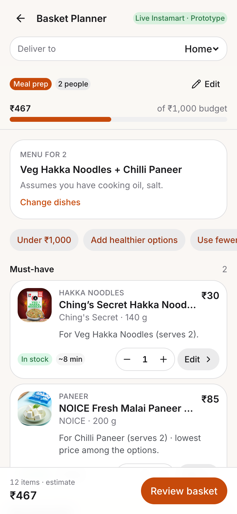
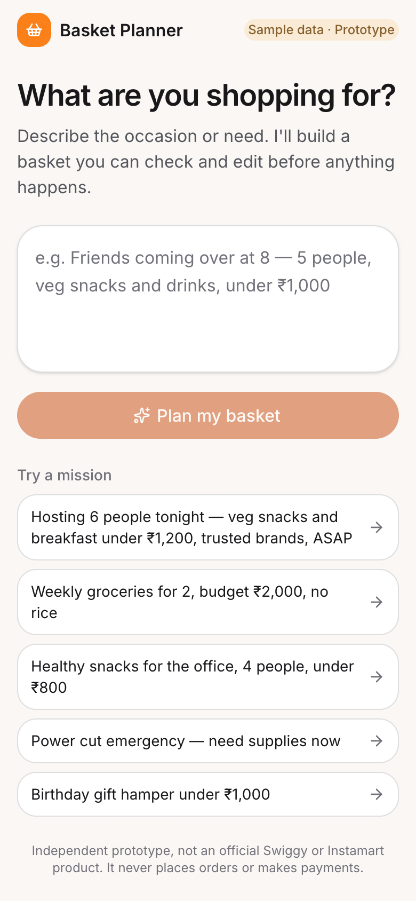
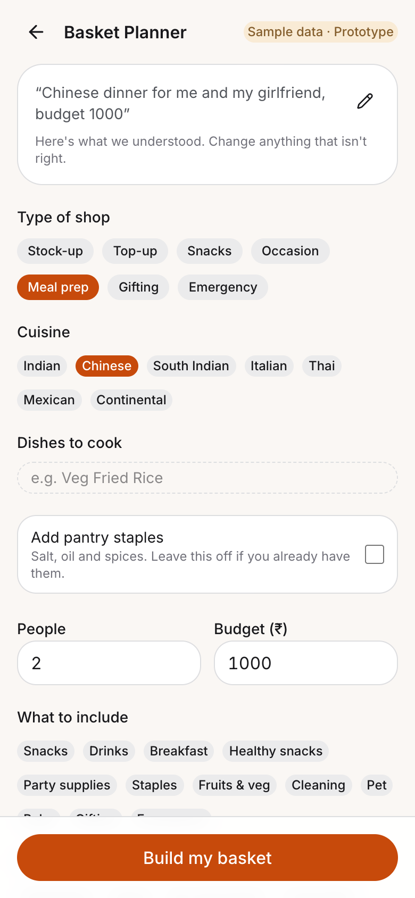
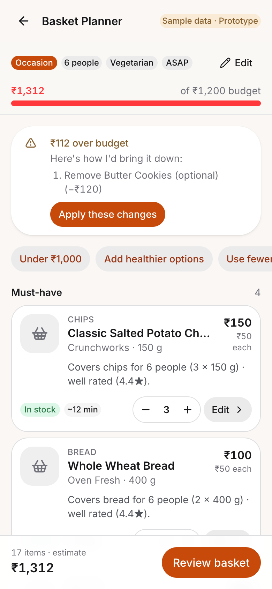
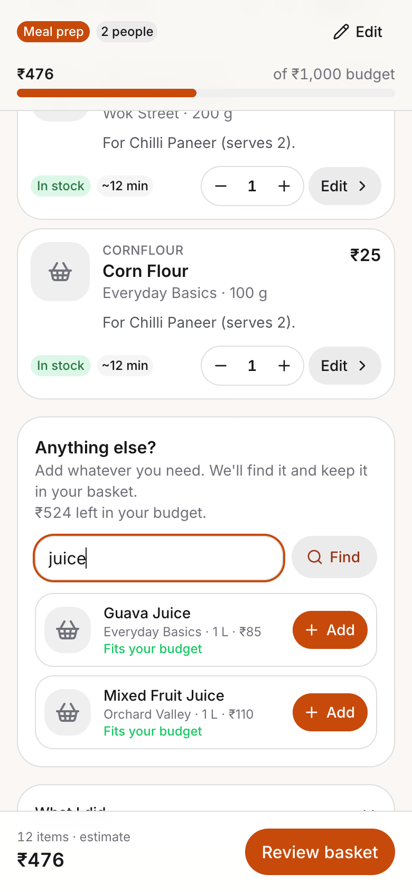
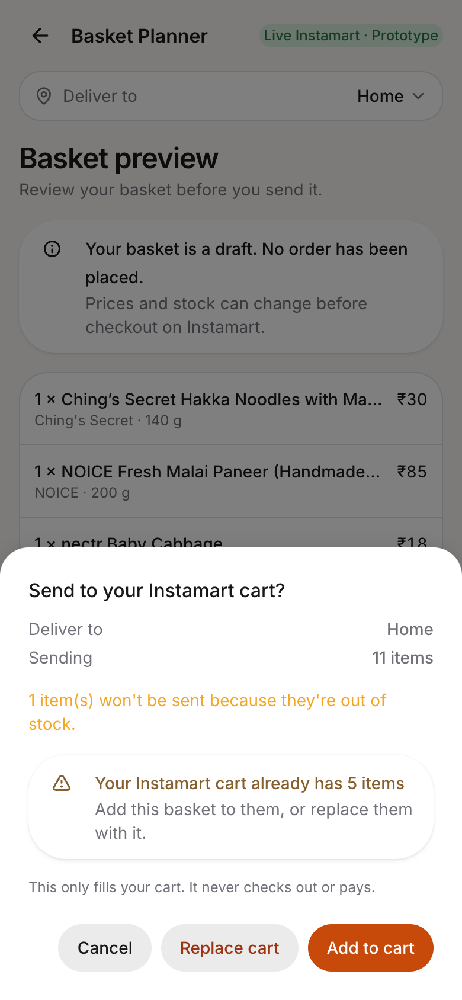

<title>Basket Planner Carousel</title>
<link rel="stylesheet" href="https://fonts.googleapis.com/css2?family=Rubik:wght@500;600&family=Nunito+Sans:wght@400;600;700&display=swap">
<style>
/* Layout: eight 4:5 slides in a wrapping grid; every size inside a slide is in cqw so it scales from phone preview to the 1080px PDF page. */
:root {
  --paper: #fbf7f3; --ink: #231a14; --soft: #5a4a40; --brand: #fc8019; --brand-ink: #2a1203; --accent: #b8400a; --line: #eadfd5;
  --page: #f3ece4; --page-fg: #231a14; --page-muted: #5a4a40;
  --display: Rubik, "Trebuchet MS", Arial, sans-serif; --body: "Nunito Sans", Arial, sans-serif;
}
@media (prefers-color-scheme: dark) { :root:not([data-theme="light"]) { --page: #1b1512; --page-fg: #f3ece4; --page-muted: #c9bcb1; color-scheme: dark } }
:root[data-theme="dark"] { --page: #1b1512; --page-fg: #f3ece4; --page-muted: #c9bcb1; color-scheme: dark }
body { background: var(--page); color: var(--page-fg); font-family: var(--body); padding-inline: 16px; padding-block: 24px 48px }
.intro { max-width: 1120px; margin-inline: auto; display: flex; flex-direction: column; gap: 4px; padding-bottom: 20px }
.intro h1 { font-family: var(--display); font-weight: 600; font-size: 22px; text-wrap: balance }
.intro p { color: var(--page-muted); font-size: 15px; max-width: 65ch }
.deck { max-width: 1120px; margin-inline: auto; display: grid; grid-template-columns: repeat(auto-fit, minmax(min(100%, 300px), 1fr)); gap: 20px }
.slide { container-type: inline-size; aspect-ratio: 4 / 5; max-width: 100%; background: var(--paper); color: var(--ink); border-radius: 12px; overflow: hidden; position: relative }
.in { position: absolute; inset: 0; padding: 9cqw 8.5cqw; display: flex; flex-direction: column; gap: 5cqw }
.slide h2, .slide p, .slide figure, .slide ol { margin: 0 }
.eyebrow { font-size: 2.6cqw; font-weight: 700; letter-spacing: 0.25cqw; text-transform: uppercase; color: var(--accent) }
h2 { font-family: var(--display); font-weight: 600; font-size: 7.4cqw; line-height: 1.08; text-wrap: balance }
.lead { font-size: 3.6cqw; line-height: 1.4; color: var(--soft) }
.foot { position: absolute; left: 8.5cqw; right: 8.5cqw; bottom: 5cqw; display: flex; justify-content: space-between; font-size: 2.3cqw; color: var(--soft) }
.phone { border: 0.14cqw solid var(--line); border-radius: 1.4cqw; display: block; object-fit: cover; object-position: top; background: #fff }
.brand { background: var(--brand); color: var(--brand-ink) }
.brand .eyebrow, .brand .lead, .brand .foot { color: var(--brand-ink) }
.dark { background: var(--ink); color: var(--paper) }
.dark .eyebrow { color: #ffb67a } .dark .lead, .dark .foot { color: #e8dcd2 }
.pills { display: flex; flex-wrap: wrap; gap: 2cqw }
.pills span { border: 0.25cqw solid var(--line); background: #fff; border-radius: 99cqw; padding: 1.6cqw 3.2cqw; font-size: 3.3cqw }
.trio { display: flex; justify-content: space-between; gap: 3cqw; margin-top: auto; padding-bottom: 6cqw }
.trio figure { margin: 0; display: flex; flex-direction: column; gap: 2cqw; align-items: center; font-size: 2.9cqw; font-weight: 700 }
.trio .phone { width: 25cqw; height: 54cqw }
.steps { display: flex; flex-direction: column; gap: 2.2cqw; margin: 0; padding: 0; list-style: none; counter-reset: s }
.steps li { counter-increment: s; display: grid; grid-template-columns: 8cqw 1fr; gap: 3cqw; align-items: start; border-top: 0.25cqw solid var(--line); padding-top: 2.2cqw; font-size: 3.1cqw; line-height: 1.35; color: var(--soft) }
.steps li::before { content: counter(s); font-family: var(--display); font-weight: 600; font-size: 6cqw; line-height: 1; color: var(--accent) }
.steps b { display: block; color: var(--ink); font-size: 3.7cqw }
.nums { display: flex; gap: 6cqw; align-items: baseline }
.nums div { display: flex; flex-direction: column; gap: 1cqw; font-size: 3cqw; color: var(--soft) }
.nums strong { font-family: var(--display); font-weight: 600; font-size: 15cqw; line-height: 1; color: var(--accent) }
.pair { display: flex; gap: 4cqw; justify-content: center; margin-top: auto; padding-bottom: 6cqw }
.pair figure { margin: 0; display: flex; flex-direction: column; gap: 2cqw; align-items: center; font-size: 2.9cqw; font-weight: 700 }
.pair .phone { width: 29cqw; height: 62cqw }
.split { display: grid; grid-template-columns: 30cqw 1fr; gap: 5cqw; align-items: center; margin-top: auto; padding-bottom: 6cqw }
.split .phone { width: 30cqw; height: 65cqw; object-position: bottom }
.points { display: flex; flex-direction: column; gap: 3.4cqw; margin: 0; padding: 0; list-style: none; font-size: 3.1cqw; line-height: 1.35; color: var(--soft) }
.points b { display: block; color: var(--ink); font-size: 3.7cqw }
.link { font-family: var(--display); font-weight: 600; font-size: 5cqw; color: #ffb67a; overflow-wrap: anywhere }
</style>

<header class="intro">
  <h1>LinkedIn carousel: Smart Basket Planner</h1>
  <p>Nine portrait slides. The same slides are in the PDF, ready to upload as a LinkedIn document post.</p>
</header>

<main class="deck">
  <section class="slide brand" aria-label="Slide 1">
    <div class="in">
      <p class="eyebrow">A prototype I designed and built</p>
      <h2>What if you could shop by mission, not by item?</h2>
      
    </div>
  </section>

  <section class="slide" aria-label="Slide 2">
    <div class="in">
      <p class="eyebrow">The problem</p>
      <h2>We think “friends at 8”. Apps make us search twelve products.</h2>
      <div class="pills"><span>Party tonight</span><span>Weekly stock-up</span><span>Dinner for two</span><span>Power cut</span><span>Gift under ₹1,000</span></div>
      <p class="lead">Quick commerce delivers in minutes. Planning the basket is still manual: search, compare, check stock, do the budget maths.</p>
      <div class="foot"><span>Smart Basket Planner</span><span>2 / 9</span></div>
    </div>
  </section>

  <section class="slide" aria-label="Slide 3">
    <div class="in">
      <p class="eyebrow">The idea</p>
      <h2>One sentence in, an editable basket out</h2>
      <div class="trio">
        <figure><span>Say it your way</span></figure>
        <figure><span>Check the details</span></figure>
        <figure><span>Get the basket</span></figure>
      </div>
      <div class="foot"><span>Smart Basket Planner</span><span>3 / 9</span></div>
    </div>
  </section>

  <section class="slide" aria-label="Slide 4">
    <div class="in">
      <p class="eyebrow">An example</p>
      <h2>“Chinese dinner for two, ₹1,000”</h2>
      <p class="lead">It planned Veg Hakka Noodles and Chilli Paneer, then found 12 real Instamart products for ₹467.</p>
      
    </div>
  </section>

  <section class="slide" aria-label="Slide 5">
    <div class="in">
      <p class="eyebrow">How it works</p>
      <h2>Four steps behind one sentence</h2>
      <ol class="steps">
        <li><span><b>Understands the request</b>People, budget, diet and cuisine. AI only when it is vague.</span></li>
        <li><span><b>Plans a menu</b>Picks dishes from a recipe base and scales the quantities.</span></li>
        <li><span><b>Searches the catalogue</b>Live, through Swiggy's Instamart MCP.</span></li>
        <li><span><b>Ranks and explains</b>In stock, within budget, a reason on every item.</span></li>
      </ol>
      <div class="foot"><span>Smart Basket Planner</span><span>5 / 9</span></div>
    </div>
  </section>

  <section class="slide" aria-label="Slide 6">
    <div class="in">
      <p class="eyebrow">What I learned</p>
      <h2>The first version suggested atta noodles for a Chinese dinner</h2>
      <p class="lead">It had no idea what a dish was. So I gave it recipes, and the baskets became accurate.</p>
      <div class="nums">
        <div><strong>26</strong>dishes I curated for Indian homes</div>
        <div><strong>241</strong>more from TheMealDB's free recipe API</div>
      </div>
      <div class="foot"><span>Recipe data credit: TheMealDB</span><span>6 / 9</span></div>
    </div>
  </section>

  <section class="slide" aria-label="Slide 7">
    <div class="in">
      <p class="eyebrow">Trust and control</p>
      <h2>It explains itself, and you stay in charge</h2>
      <div class="pair">
        <figure><span>Over budget? It shows a plan</span></figure>
        <figure><span>Add your own items</span></figure>
      </div>
      <div class="foot"><span>It never orders without you</span><span>7 / 9</span></div>
    </div>
  </section>

  <section class="slide" aria-label="Slide 8">
    <div class="in">
      <p class="eyebrow">At the end</p>
      <h2>Review it, then send it to your Instamart cart</h2>
      <div class="split">
        
        <ul class="points">
          <li><b>You confirm every send</b>It fills your real cart, then Open Instamart takes you there to check out.</li>
          <li><b>Your cart is safe</b>Already have items? Add to them or replace them, your call.</li>
          <li><b>Or keep it for later</b>Save the basket to reuse, or copy the list as text.</li>
        </ul>
      </div>
      <div class="foot"><span>Live with my Swiggy login. The public demo uses sample data.</span><span>8 / 9</span></div>
    </div>
  </section>

  <section class="slide dark" aria-label="Slide 9">
    <div class="in">
      <p class="eyebrow">Try it</p>
      <h2>Open it on your phone and tell me what you'd change</h2>
      <p class="link">smart-basket-planner.vercel.app</p>
      <p class="lead">Open source on GitHub<br><span style="font-size:3cqw;white-space:nowrap">github.com/kanishksingh3012/smart-basket-planner</span></p>
      <p class="lead" style="margin-top:auto">Built with Claude Code, Next.js and Swiggy's Instamart MCP.</p>
      <div class="foot"><span>Independent prototype. Not affiliated with Swiggy.</span><span>9 / 9</span></div>
    </div>
  </section>
</main>
